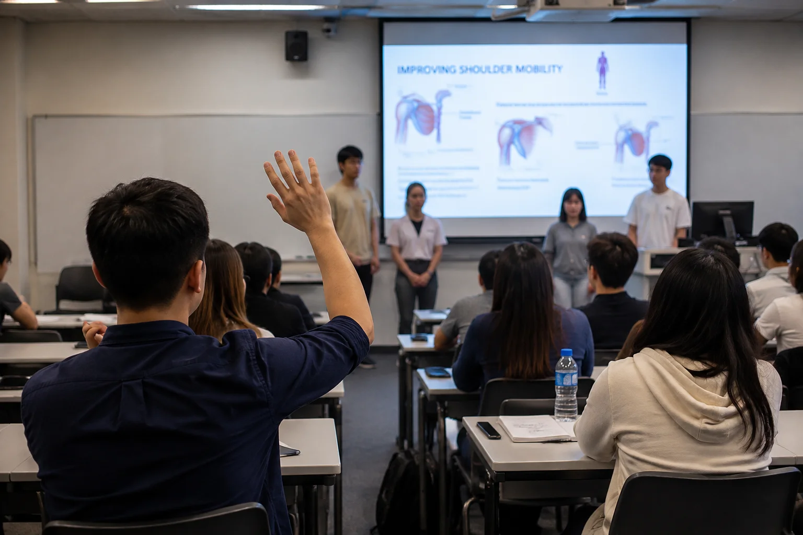

中文翻譯正在準備中。
Movement Science Assessment Redesign for Generative AI (English; translation pending)
How AI-supported preparation, presentation and live oral defence can make student reasoning visible in Movement Science assessment.
TRANSLATION REQUIRED — new collection labels and reader-journey guidance are currently in English.

From writing to practice
This assessment record connects with the approaches to physiotherapy teaching described on the Teaching page.
Teaching and assessment designOfficial sources
Supplementary provenance: this official source is already cited elsewhere in the Writing archive. Its inclusion does not indicate a new policy review.
Continue exploring
別再只顧捉人工智能：運用人工智能促進學習的實用指南
一份運用人工智能支援學習的實用指南，同時把重要思考、核實及獨立表現保留給學生。
我們應該在有人工智能還是沒有人工智能的情況下評估學生？
雙軌評估以目的重新理解人工智能：在學習階段運用當代工具，同時在關鍵時刻確認學生具備獨立臨床能力。
當人工智能能讀取卻不能行動：限制為何可能是一種保障
一次真實的日曆任務令我重新思考：人工智能拒絕行動究竟是失敗，還是守護權限、私隱與問責的有用界線？
Follow my work
I write about clinical reasoning, AI, virtual reality, simulation and health professions education.